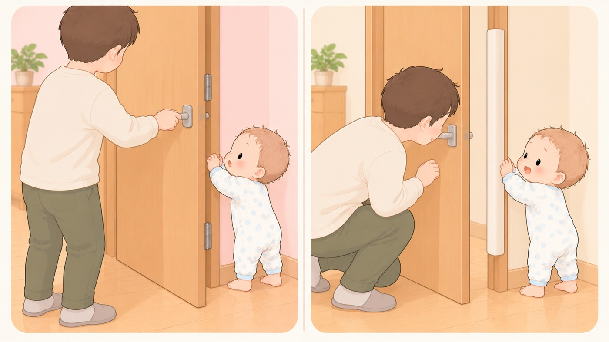

ぶつける・はさむ
家具の角と、ドアの指はさみ
消費者庁は、骨折や切断に至ることもあるとしている。1歳8か月で爪が完全に脱臼した事例がある
つかまり立ちと伝い歩きが始まると、ローテーブルやテレビ台の天板の縁が、ちょうど目や額の高さになります。手を離してバランスを崩すと、顔からその縁に倒れ込みます。もうひとつ、この時期から増えるのがドアの指はさみです。

左は危険な例、右は安全な例です。- すること：テーブル・テレビ台の角と、縁の直線部分にガードをつける
倒れ込む向きは決まらないので、角だけでは足りません。消費者庁は、角の丸い家具を選ぶ、クッションテープを取り付けるなどの工夫をすすめています。 - すること：ドアのちょうつがい側（開く側の付け根）にカバーをつける
消費者庁も、ドアのちょうつがい部分にすき間防止カバーを付けることを挙げています。 - しないこと：ドアの向こうに子どもがいないか確かめずに閉めない
事例は「ドアの反対側にこどもがいることに気付かずに閉めた」で始まっています。閉める前に、ドアの向こうを一度見ます。 - しないこと：風でドアが閉まる状態にしない
窓を開けて風が通ると、ドアは勢いよく閉まります。開けておきたいドアはストッパーで固定し、入れたくない部屋のドアは手の届かない高さの補助錠で開かないようにします。 - すること：引き戸の戸尻側と、折りたたむものにも目を向ける
引き戸は、開けたときに戸と枠のあいだにすき間ができる側で、指がはさまります。折りたたみのいすやベビーゲートのちょうつがいも同じです。
どこに指がはさまるか
消費者庁は、ドアの指挟みについて 「場合によっては指の骨折や切断などの重傷に至ることもある」としています。
挙げられている事例です。 「保護者が、ドアの反対側にこどもがいることに気付かずに、ドアを閉めてしまった。 その際に、ドアの蝶番側に挟まったこどもの右手小指が骨折・一部断裂した」。
日本小児科学会の傷害速報にも、1歳8か月の子が ガラス製の両開きドアのちょうつがい付近で指をはさみ、 末節骨の開放骨折、爪の完全脱臼を負った事例が載っています。
取っ手側は、はさまれてもすき間が残ります。 ちょうつがい側は、回転の支点に近いぶん小さな力でも大きな力が集中し、 閉じたときにすき間がほとんど残りません。重傷になるのはこちら側です。
🛍 グッズの選び方
PR- コーナーガードは貼り直せるゲルタイプだと、賃貸でも跡が残りにくくなります。
- 角だけの製品ではなく、縁の直線部分に貼れる長さがあるものを選びます。
- 指はさみ防止はドアの両側（取っ手側とちょうつがい側）に対応したものを選びます。
- ドアストッパーは、風で閉まるドアを開いたまま保持できるものを選びます。足で踏んで固定するタイプは、子どもが外します。
- コーナーガード 全長6m（貼り直せるゲルタイプ）貼り直せる。角と縁をまとめて覆えるAmazonで見る →
- はさマンモス（ドア指はさみ防止）ドアのちょうつがい側をふさぐAmazonで見る →
- ＆COCO ドア 指はさみ防止カバードアの縁に挟む。開閉で指を挟まないAmazonで見る →
- ゆびストップ ドア指はさみ防止 ie-05（日本製・じゃばら式）じゃばら式。ドアの可動側をふさぐAmazonで見る →
- フィンガーアラート ドア指はさみ防止 指ガードちょうつがい側まで覆えるAmazonで見る →
リンクはAmazonアソシエイトリンクです。当サイトはアフィリエイトプログラムに参加しています。Amazonのアソシエイトとして、当サイトは適格販売により収入を得ています。 選び方の方針
この項目の根拠
- みんなの消費安全ナビ Vol.647 室内のドアの指挟み事故に注意！（消費者庁）（新しいタブで開きます）
室内のドアの指挟み事故について、場合によっては指の骨折や切断などの重傷に至ることもあり日頃の注意が必要であること。保護者がドアの反対側にこどもがいることに気付かずにドアを閉めてしまい、その際にドアの蝶番側に挟まったこどもの右手小指が骨折・一部断裂した事例。ドアの蝶番部分に隙間防止カバーを付けること、ドアストッパーを使うこと。 - 傷害速報 No.90 開閉式ドアによる手指外傷（日本小児科学会・PDF）（新しいタブで開きます）
1歳8か月がガラス製手動両開きドアの蝶番付近で左環指をはさみ、末節骨開放骨折、末節部圧挫創、爪完全脱臼、爪床挫創を負った事例。 - 子どもを事故から守る！事故防止ハンドブック（消費者庁・PDF）（新しいタブで開きます）
転倒してテーブルなどの家具の角に顔や頭をぶつけてけがをすることがあること。角の丸い家具を選ぶ、クッションテープを取り付けるなどして、ぶつかってもけがをしないように工夫をすること。ドアや窓は風で急に閉まることがあるので気を付けること。ドアのちょうつがい部分に隙間防止カバーを付けること。